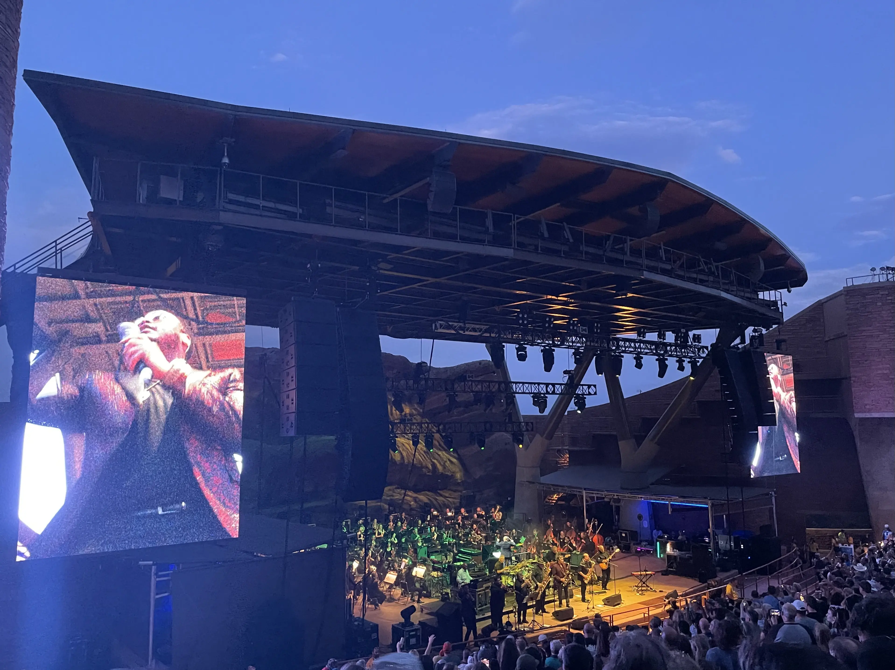
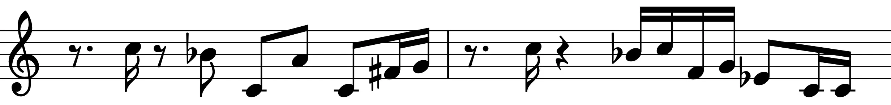
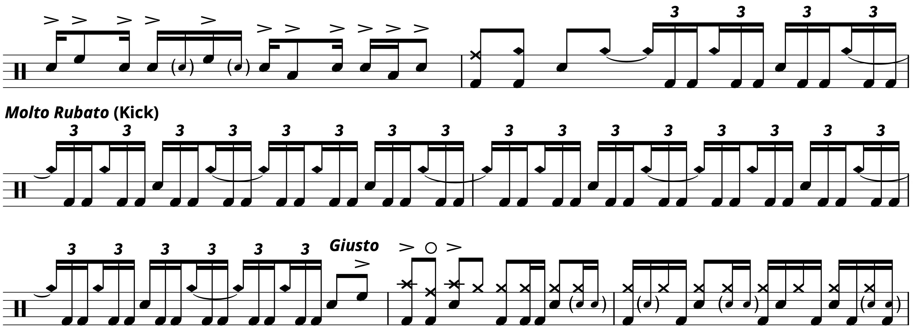

Transcription: “Ebony Jam” — David Garibaldi with Tower of Power
Posted on August 28, 2022
We’ll be talking about David Garibaldi this week, mainly because I got a chance to see Tower of Power at Red Rocks back in July:
In case you weren’t sure: yes, they still got it. Not even a train can stop the funk.
I guess this post is a bit overdue, but it took a sec to find the right tune to pick apart. TOP’s most famous numbers have been transcribed by David himself in his Off the Record book, and I’m not going to tread on his work there. So, I decided on “Ebony Jam” from In the Slot.
I was actually surprised to learn that David didn’t do this track in his book since it’s kind of a big jam. But I had a moment of realization that the tune is very similar to “Squib Cakes” from Back to Oakland (a track which is included in Off the Record). Both songs are instrumental, open with drums, have three main solo sections with sax/horn/guitar, feature a soft swing interlude, and climax with an extended organ solo.
All that being said, there are some interesting moves from David on this one. The main groove has a funky beat four with the hi–hats moving to the offbeat. Also, note how the backbeat on 2 doesn’t have a hi–hat with it.
It took me a few careful listens, but I’m fairly certain David is not playing the hi–hat on this beat. It may seem unusual, but drummers do this more often than you’d think — Bernard Purdie and Charlie Watts are two drummers known to do this to get a bigger backbeat sound.
There’s a subtle swing feel on the 16th notes throughout the track, which really kicks up during this horn riff that first shows up at the 1:00 mark to start the sax solo:
While there’s a tinge of swing on the grooves, all of the fills should be played as written.
I guess I should talk about this horrifying moment:
It was tough to pick up on what David was playing here, so I had to turn to one of those AI stem generation services. In the past, I’ve used Moises, but I’ve recently heard about another one called LaLal which I decided to try out for this transcription.
I’ll probably compare the two in a full–fledged blog post, but the end result is pretty similar: good for fishing out the kick drum and toms, not so much for cymbals and ghost notes.
Anyhoo, with the drums “isolated”, I’m pretty sure that’s what the kick is supposed to be doing. I say supposed to since the rhythm of the kick drum is often mangled during those four bars into something in between a 16th and a 16th note triplet. I’m not surprised; this is a challenging passage to play at tempo (this is what I call a “go for it” moment — don’t hurt yourself trying to play it).
I looked at the first two and a half minutes before jumping to the organ solo to finish the sheet music. The groove that drives the section is more or less built around paradiddles. It’s some, dense, consummate funk drumming.
“Song” on Songwhip.
Tags: 2022 • Transcription • David Garibaldi • Tower of Power